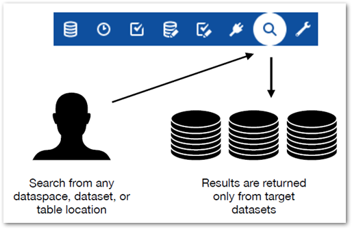

The EBX® Information Search Add-on allows you run a targeted search to find and retrieve data contained in your TIBCO EBX® repository. The add-on's search differs from the quick search available in EBX® in that it looks for data in the target locations specified by an administrator. For example, you can access the add-on's search from any EBX location, but the results come from the target locations set by your administrator.
